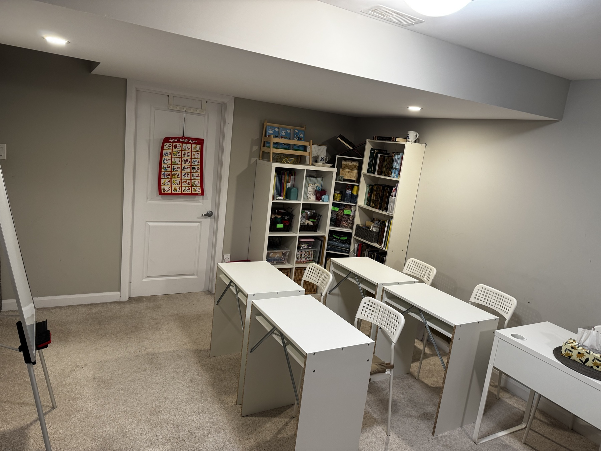
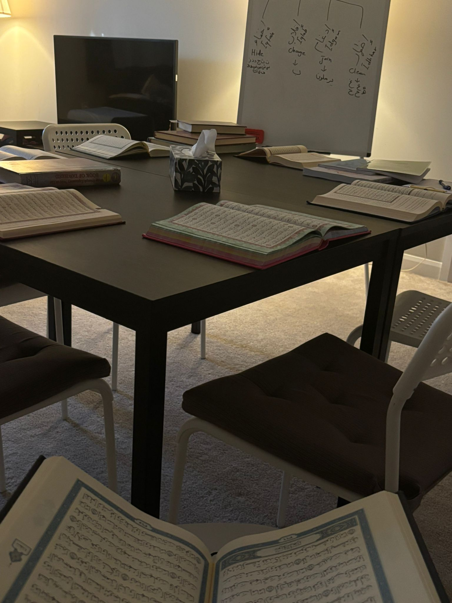
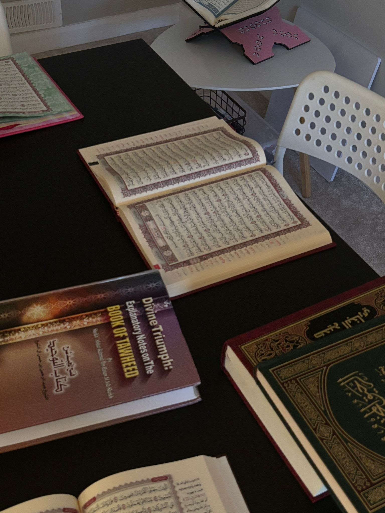
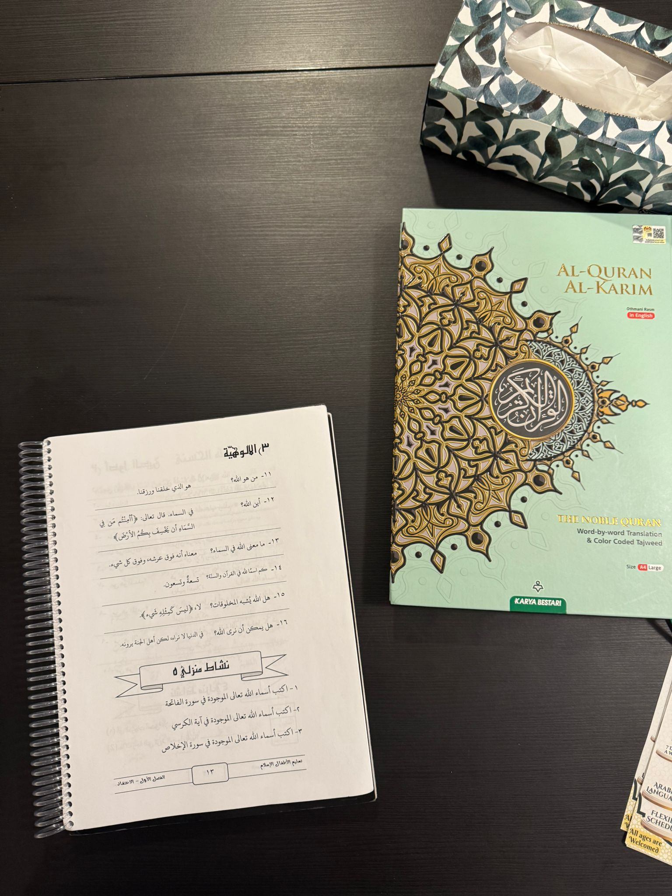
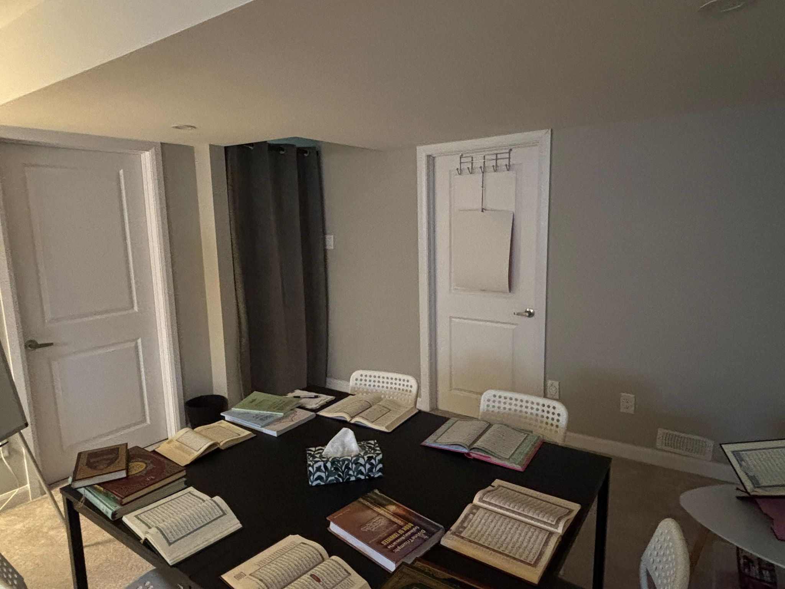

Student Life
A calm environment for learning and growth.
Real lessons, prepared materials, attentive teaching, and a respectful rhythm for Qur’an, Arabic, and Islamic Studies.


Learning together
Attentive teaching in a settled space.
A calm classroom helps students listen carefully, practise without embarrassment, and receive correction with confidence.
Lessons bring together explanation, recitation, reading, writing, repetition, and review. Adab shapes how students engage with the teacher, with one another, and with the knowledge being studied.
Learning in practice
Qur’an, Arabic, and Islamic Studies made visible.
Students see, hear, repeat, discuss, and apply new material in manageable steps. The materials change with the subject; the careful learning rhythm remains consistent.



Materials & activities
Prepared for the stage of learning.
Qur’an passages, notebooks, Arabic letters, puzzles, and age-appropriate activity books each serve a teaching purpose. They help students move from explanation to practice without making the lesson feel rushed or abstract.


Community & recognition
Progress is noticed with care.
Completion, improved recitation, consistent effort, and growing confidence are meaningful parts of student life.
The academy recognizes these moments without turning learning into performance. Families remain connected to the student’s starting point, current work, and next steps through practical communication and clear expectations.

Ottawa & online
A real classroom, with learning that can continue beyond it.
The East Ottawa setting provides a grounded, family-oriented academy experience. Online options extend access while keeping the same emphasis on preparation, direct teaching, correction, review, and adab.
Registered in Ontario Based in Ottawa Online & In-Person
Find a starting point
Explore the learning paths.
Review the programs or share the learner’s age, level, goals, and preferred format for a placement recommendation.